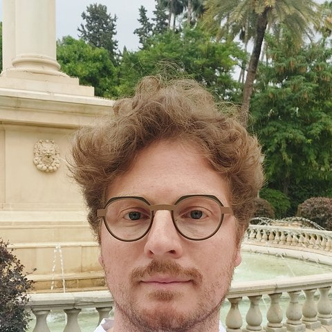

Hypsis
La plateforme IA native qui matérialise la décision
- Asseoir : chaque recommandation est ancrée dans vos données réelles, quelle qu’en soit la forme.
- Explorer : des milliers de scénarios, bien au-delà de ce qu’une équipe peut jouer à la main.
- Restituer : l’essentiel pour trancher, puis, quand la décision doit s’inscrire dans la durée, un modèle d’IA ou un outil sur mesure déployé sur votre réseau.
Souveraine par conception : la plateforme tourne sur votre réseau, vos données n’en sortent jamais et les modèles sont auditables.
Nous livrons une décision et l’instrument qui la fait vivre.

William Le Ferrand
Fondateur & Managing Partner · la signature de la mission